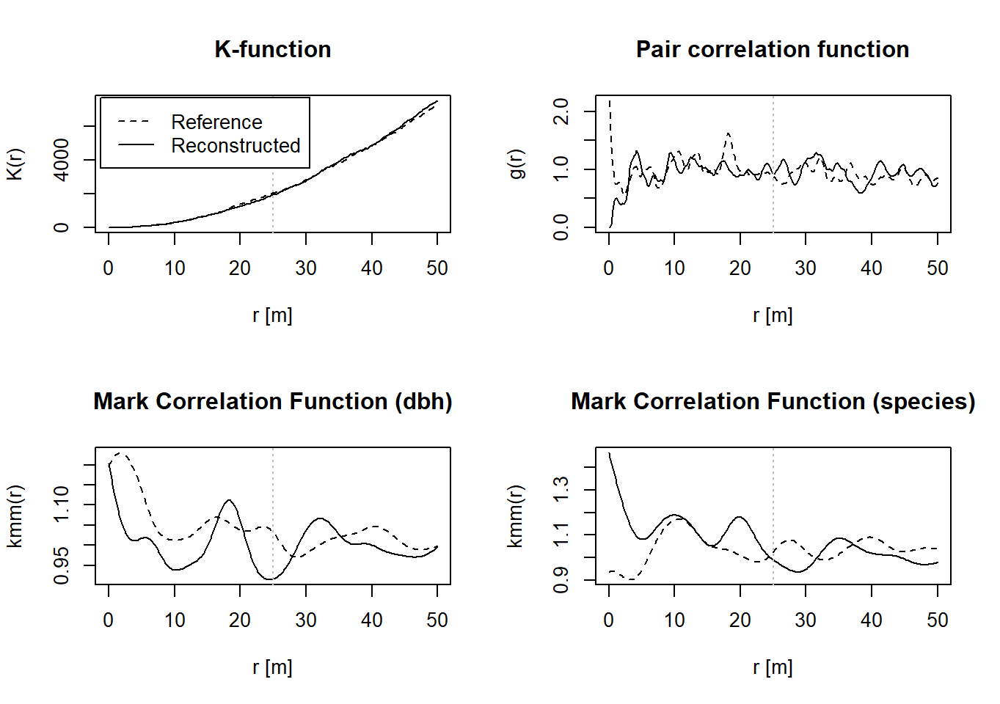

source("https://raw.githubusercontent.com/ChrisWudel/Multi-trait-point-pattern-reconstruction/main/func/setup.R")
setup(
packages = c("spatstat"),
func_names = c("reconstruct_pattern_multi", "compute_statistics",
"dummy_transf", "energy_fun", "calc_moments", "select_kernel",
"plot.rd_multi", "sample_points")
)2 Simple application example
The following example demonstrates a simple application of Multi-Trait Point Pattern Reconstruction (MTPPR) presented in Wudel et al. (2023). It illustrates reconstruction using fictitious datasets that incorporate multiple traits simultaneously. The required libraries must be loaded beforehand.
Please note that the maximum number of iterations has been set to max_steps = 10000 and n_repetitions = 3 in this example to keep computation time low. No weighting of different summary statistics has been performed, which may be necessary for different applications (e.g., forest stands) to achieve optimal results. For real-world applications, it is advisable to adjust these parameters accordingly. Additionally, in the vignette, verbose = FALSE has been set to minimize print output. We recommend using the default setting verbose = TRUE when running the code to see progress reports.
The next step is to load the point pattern, here is an example of a random point pattern with several marks to show the structure of the data used.
xr <- 500
yr <- 1000
N <- 400
y <- runif(N, min = 0, max = yr)
x <- runif(N, min = 0, max = xr)
species <- sample(c("A","B"), N, replace = TRUE)
diameter <- runif(N, 0.1, 0.4)
random <- data.frame(x = x, y = y, dbh = diameter, species = factor(species))
marked_pattern <- as.ppp(random, W = owin(c(0, xr), c(0, yr)))The point pattern must contain the following data. An x and y coordinate, a metric mark (in metres) and a nominal mark defined as a factor. The order must be respected. Now the reconstruction with several marks can be started with the following code. Note that the maximum number of iterations has been set to max_steps = 10000 to keep the computation time for this example to a minimum. For an application, this value should be increased according to the number of points in the pattern.
reconstruction <- reconstruct_pattern_multi(marked_pattern, n_repetitions = 1, max_steps = 10000, issue = 5000, verbose = TRUE)
> Progress: || iterations: 0 || Simulation progress: 0% || energy = 0.10793 || energy improvement = 0
> Progress: || iterations: 5000 || Simulation progress: 50% || energy = 0.00076 || energy improvement = 357
> Progress: || iterations: 10000 || Simulation progress: 100% || energy = 0.00072 || energy improvement = 530As a result, you will receive a list containing a variety of information, for example, the reference pattern, the reconstructed pattern, the number of successful actions, the energy development and much more. If you wish to perform several reconstructions of the same reference pattern, you must increase n_repetitions to the desired number.
reconstruction_2 <- reconstruct_pattern_multi(marked_pattern, n_repetitions = 2, max_steps = 10000, issue = 5000, verbose = TRUE)
> Progress: reconstruction_1 || iterations: 0 || Simulation progress: 0% || energy = 0.19684 || energy improvement = 0
> Progress: reconstruction_1 || iterations: 5000 || Simulation progress: 50% || energy = 0.00134 || energy improvement = 351
> Progress: reconstruction_1 || iterations: 10000 || Simulation progress: 100% || energy = 0.00129 || energy improvement = 512
> Progress: reconstruction_2 || iterations: 0 || Simulation progress: 0% || energy = 0.10089 || energy improvement = 0
> Progress: reconstruction_2 || iterations: 5000 || Simulation progress: 50% || energy = 0.002 || energy improvement = 313
> Progress: reconstruction_2 || iterations: 10000 || Simulation progress: 100% || energy = 0.00196 || energy improvement = 484To activate a visualisation of the reconstruction that shows the changes in the pattern at the relevant time, you must proceed as follows.
reconstruction_3 <- reconstruct_pattern_multi(marked_pattern, n_repetitions = 1, max_steps = 10000, show_graphic = TRUE, issue = 5000, verbose = TRUE)
> Progress: || iterations: 0 || Simulation progress: 0% || energy = 0.0563 || energy improvement = 0
> Progress: || iterations: 5000 || Simulation progress: 50% || energy = 0.00295 || energy improvement = 339
> Progress: || iterations: 10000 || Simulation progress: 100% || energy = 0.00291 || energy improvement = 534
Finally, you can use the following function to view different summary statistics of the reference pattern (black line) compared to the reconstructed pattern (grey line). For this, however, the listed libraries must be loaded additionally.
plot(reconstruction)Progress in the creation of the figures: 100% 